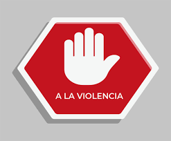

Alto
a la violencia
escolar
Como disminuir la violencia escolar
- Fomentar la empatía y el respeto
- Crear un ambiente seguro
- Programas de prevencion
Como respetarse entre compañeros
- Comunicación abierta y respetuosa
- Reconoce y valora las diferencia
- No juzgar
- Se amable y conciderado
Como prevenir el bulling escolar
- Crear un ambiente escolar positivo
- Establecer reglas claras
- Supervisión efectiva
- Programas de prevencion
- Involucrar a los estudiantes
- Apoyo a las victimas
- Fomentar la comunicación abierta
- Enseñar habilidades de resolución de conflictos
Concejos para cuando estés pasando por bulling
1.No estas solo busca apoyo en amigos, familiares o un adulto de confianza.
2.No responder al agresor aveces, no responder es la mejor opción para no darle mas atencion.
3.Habla con alguien comparte lo que estas pasando con alguien de confianza.
Que hacer en caso de sufrir violencia escolar
- 1.Busca ayuda habla con un adulto de confianza, como un profesor, padre o consejero.
- 2.Registra incidentes anota detalles de lo que sucede, incluyendo fechas, horas y lugares.
- 3.No te aisles busca apoyo en amigos y familiares.
Que hacer en caso de ver que alguien sufre violencia en tu escuela
- 1.No te involucres directamente no te metas en la situación, ya que podrías ponerte en peligro.
- 2.Busca ayuda informa a un profesor, consejero o personal de la escuela de inmediato.
- 3.Apoya ala victima ofrese tu apoyo y compañia a la persona que está siendo agredida.
- 4.No difundas rumores no compartas imformación sobre la situacion con otros, para evitar empeorar la situacion.
- 5.Se un aliado apoya ala victima y promueve un ambiente de respeto y tolerancia en la escuela.
Contacto que debe de tener alguien que sufre bulling
- Familiares
- Amigos
- Maestros
Ir a la otra página
Imagenes